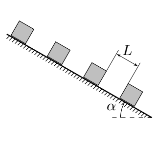

Y12 (2012) — English translation
On a long inclined plane with angle α, heavy cubes are placed at regular intervals $L$. They are held by the force of static friction.

The model assumes that if the cube is given a negligible speed, its further movement occurs without friction. If the top cube starts to move, it occurs without friction. If the top cube moves, it will collide with the second cube, then the chain of two cubes will collide with the third, and so on. All collisions are assumed to be absolutely inelastic. As a result, a long chain of cubes appears, to which more and more cubes are added. This process models the movement of an avalanche along a mountain slope.
Source: https://pho.rs/p/3977